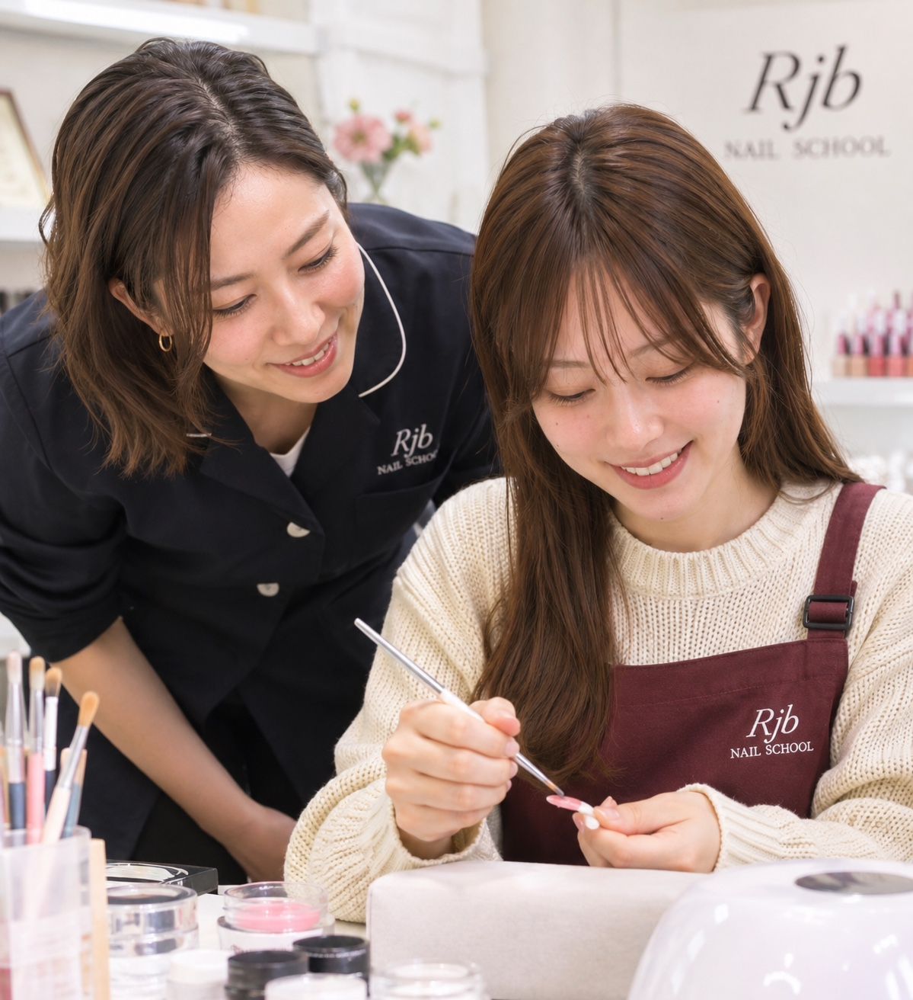
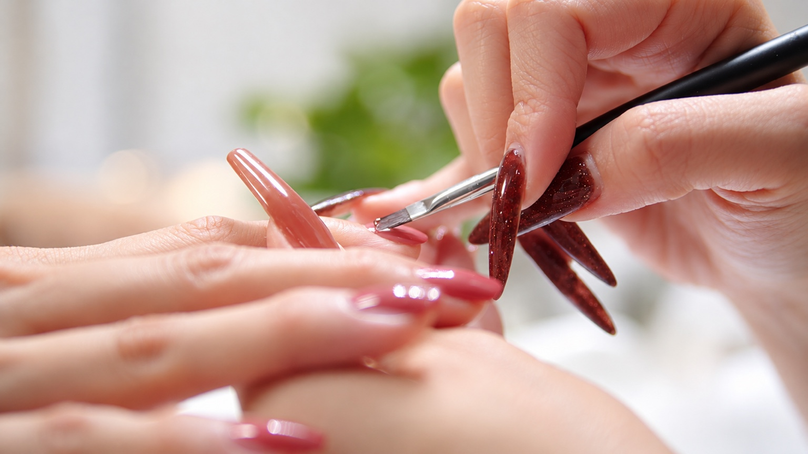
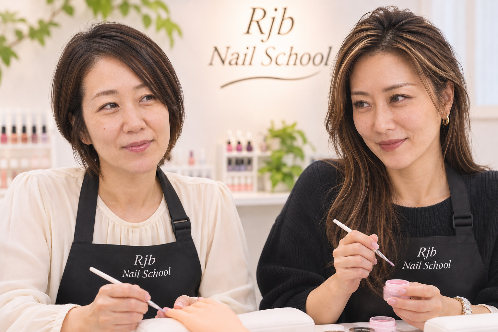

本部認定校で学ぶ
JNA本部認定校という教育環境の中で、資格取得を目指す学びを大切にしています。校内で受験できる試験や制度については、見学時に最新情報をご確認ください。
「私にもできるかな」から、「私にもできる」へ。
年齢や経験にとらわれず、基礎から丁寧に学び、自分らしい未来へ進むためのネイルスクール。

ネイルは資格がなくても仕事にできる時代です。だからこそ、どこで学び、誰から学び、どんな技術を身につけるかが大切だとRjbは考えています。
技術に自信を。仕事に誇りを。
お客様から選ばれ続けるネイリストへ。
資格はただの肩書きではなく、努力してきた証。そこに至る過程で磨く知識と技術が、自分自身を信じる力とお客様からの信頼につながります。
JNA本部認定校という教育環境の中で、資格取得を目指す学びを大切にしています。校内で受験できる試験や制度については、見学時に最新情報をご確認ください。
材料の扱い方、筆の動かし方、ジェルの塗布。一つひとつの基礎を積み重ね、サロンワークにも通じる技術を身につけます。
サロン就職、自宅での施術、将来の開業など。資格を取った後の働き方も見据え、学ぶ目的を一緒に考えます。

材料の扱い方から筆の動きまで。小さな基本を大切にすることが、未来の自信につながります。

「この年齢から始められる？」「不器用でも大丈夫？」「家事や仕事と両立できる？」そんな不安を抱える方へ。
年齢や経験が異なっても、それぞれの目標に合わせた学び方を考えることができます。最初の一歩は、できるかどうかを一人で悩むことではなく、実際の学びの環境を知ることです。
検定に向けた学びと、正しい技術の土台づくり。
実際の施術を見据え、現場で活かせる技術を学ぶ。
サロン就職や自宅での仕事など、目標に合った未来を考える。
※各ステップは教育方針を説明するための構成です。個別コースの提供内容・受講期間を保証するものではありません。
既存の技術習得・検定対策に加え、打ち合わせでは短時間で学ぶライトなコースや、個別の事情に合わせるオーダーメイド型の学びについても話がありました。
※正式なコース名、費用、教材費、期間、校内受験制度、オーダーメイド型コースの提供可否は公開前に確認が必要です。
学び方や費用、資格取得について、気になることを相談してみませんか。
公式LINEで相談する ↗ 電話で問い合わせる制作確認稿：掲載情報・受講条件・各種認定表記は公開前の正式確認が必要です。